AtisfyReach
Designing a new operational model for influencer marketing
AtisfyReach is an AI-powered platform that replaces manual brand–creator negotiations with a structured, trust-driven campaign workflow.

At a glance
AtisfyReach – Influencer Marketing Platform
Influencer marketing was broken, fragmented across tools, opaque in pricing, and inaccessible to brands without agency relationships or large budgets. AtisfyReach was built to change that.
As Lead Product Designer, I designed a scalable, AI-powered platform that unifies creator discovery, campaign configuration, contracting, payments, and performance tracking into a single structured workflow. The design focused on reducing decision anxiety through guided simplicity, enabling team collaboration through modular campaign management, and building user confidence through real-time, data-backed feedback at every step.
The launch validated both the product and the approach. 50+ brands onboarded during the launch phase, and campaigns achieved 6× lower costs through optimised ad budgets, delivering measurably stronger ROI.
The project reinforced two lasting lessons. Simplicity is never surface-deep; designing a straightforward campaign workflow revealed the intricate dependencies beneath influencer marketing systems, and every simplification required deliberate, thoughtful decisions. It also became clear that trust is the real product. Both brands and influencers needed transparency and reliability before they were willing to commit, making trust a foundational design requirement rather than a nice-to-have.
The Problem
Influencer marketing was broken; fragmented across tools, opaque in pricing, and inaccessible to brands without agency relationships or large budgets.
The solution
AtisfyReach: A scalable influencer marketing platform that unifies fragmented workflows into one intelligent, standardized system.
Creator discovery, campaign setup, contracting, payments, and performance tracking are integrated into a structured, automated workflow. Brands define objectives and budgets; AI-driven optimisation recommends creators and forecasts outcomes in real time, with full transparency into the underlying metrics. It transforms influencer marketing from manual coordination into predictable, data-backed execution.
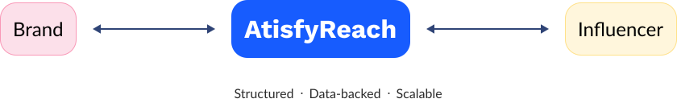
Campaign Configuration
Create and configure your campaign by defining the value proposition, campaign name, and objectives. This step establishes the foundation for the campaign and ensures influencers clearly understand the brand's expectations and goals.
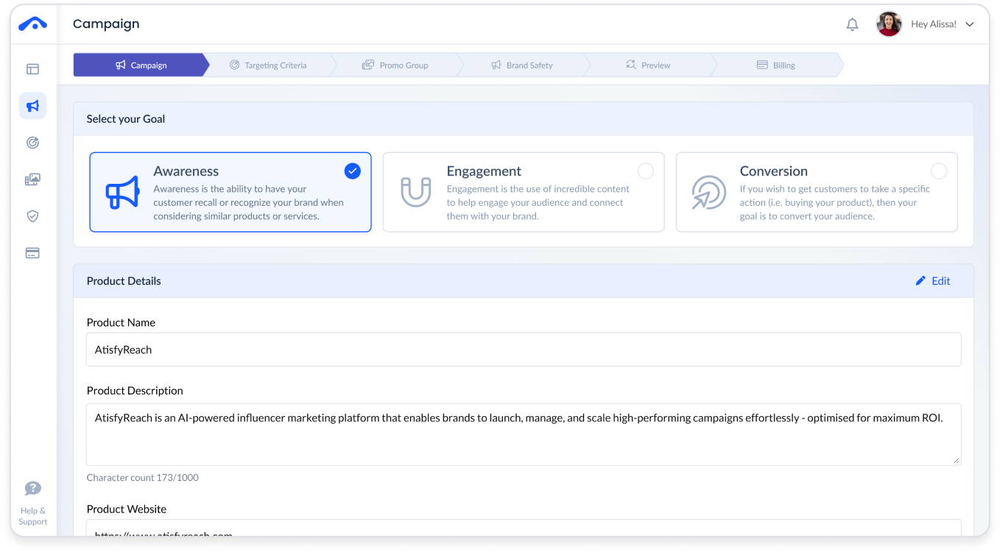
Audience Targeting
Define the ideal audience for your campaign with precision targeting based on demographics, interests, and behaviours — maximising campaign reach and relevance for your brand.
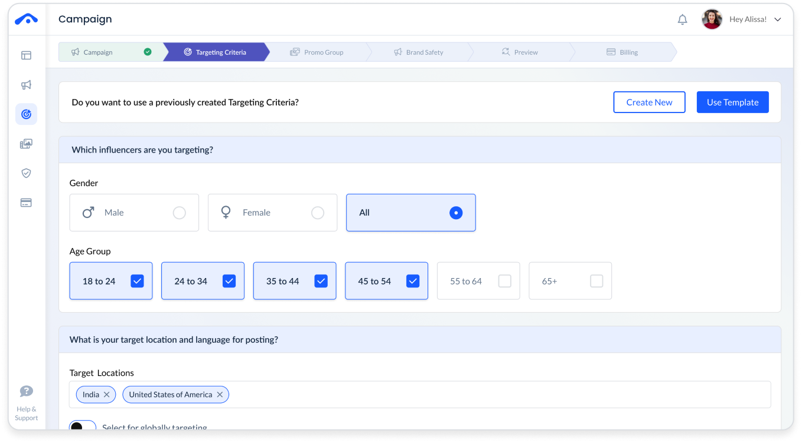
Promotion Groups
Organise your influencer campaigns into strategic promotion groups, enabling targeted outreach and clear management of different campaign segments across your team.
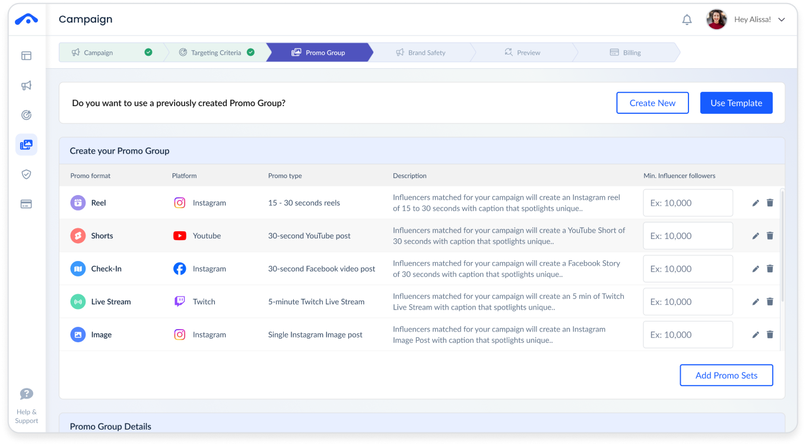
Secure Billing
Streamline payment processing with secure, automated billing workflows that protect both brands and creators throughout every stage of the campaign lifecycle.
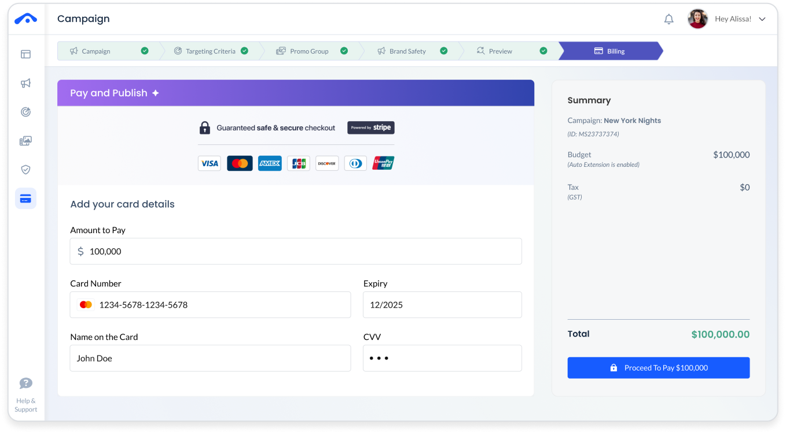
Brand Protection
Safeguard your brand with built-in content guidelines, approval workflows, and compliance checks that ensure every campaign aligns with your brand standards.
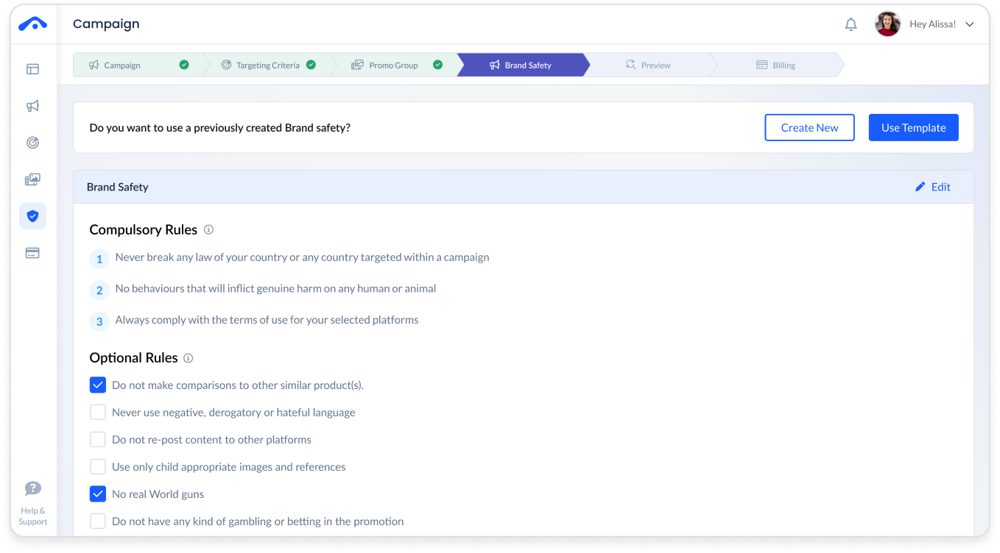
Campaign Preview & Final Review
Preview your complete campaign setup before launch, reviewing all configurations, influencer selections, and content briefs in one consolidated view.
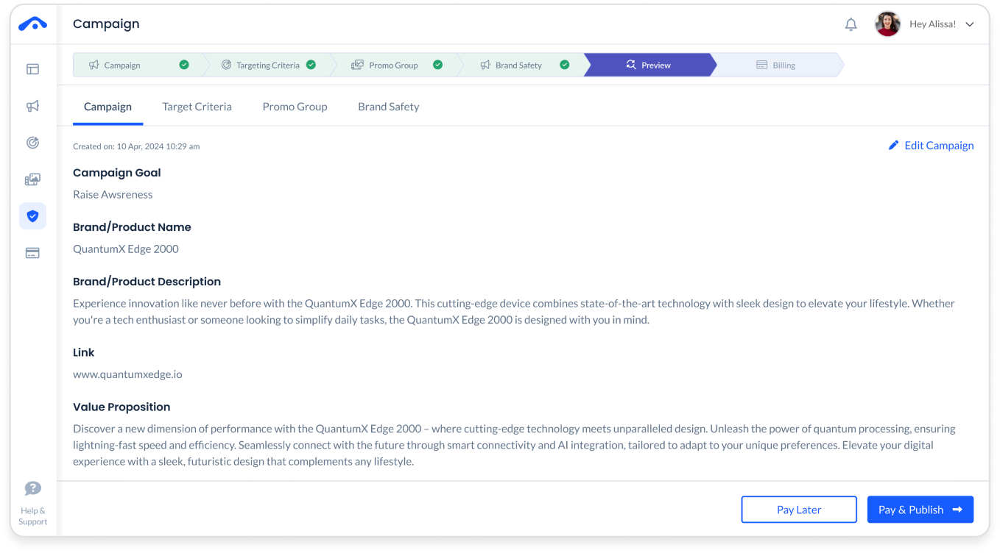
Campaign Budgeting
Set, track, and optimise your campaign budget with real-time visibility into spend allocation across influencers, ensuring maximum ROI within your budget constraints.
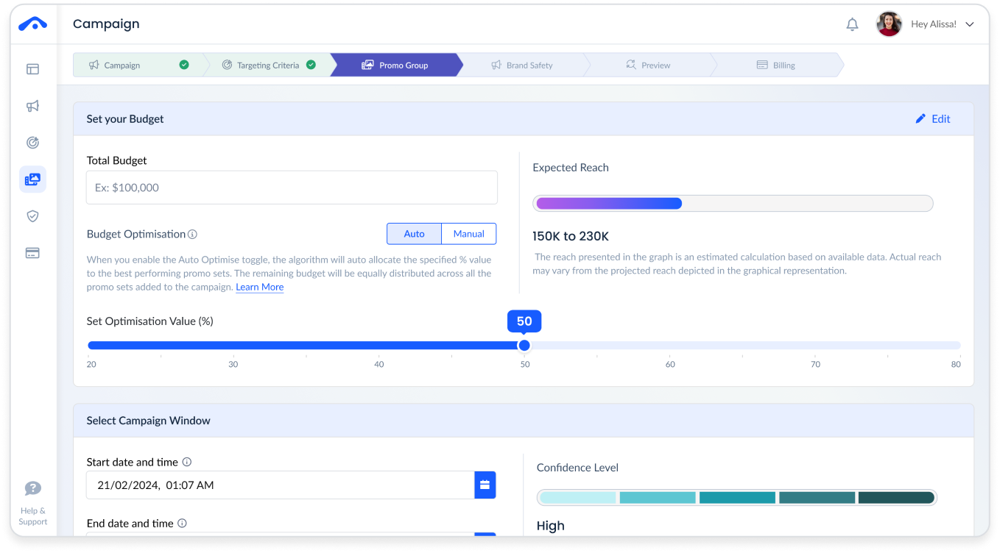
Background
Influencer marketing was manual, opaque, and relationship-driven.
Imagine: It's early October. Halloween is weeks away.
Clayton, a jewellery brand owner is preparing a Halloween collection launch. With only weeks to go, Instagram and TikTok are critical channels. Agencies are overbooked during peak season, and his campaign budget is too small to prioritise. Without support, he faces the complexity of creator discovery, outreach, contracting, payments, and performance tracking alone, all under time pressure.
This scenario reflects a broader systemic gap: influencer marketing was relationship-driven rather than system-driven. Access depended on networks and budget size, not merit or readiness. The opportunity was clear – to create an AI-powered, unified creator network that standardises workflows, automates execution, and makes influencer marketing transparent, scalable, and accessible to businesses of all sizes.

"AtisfyReach was built for Clayton and the thousands of brand owners like him."
Research
Leading Discovery with Empathy
To validate the hypothesis, I conducted in-depth interviews with brands actively running, or planning to run, influencer marketing campaigns to understand their workflows, constraints, and success criteria. In parallel, I analysed existing influencer marketing platforms to uncover gaps in transparency, automation, and scalability, helping define a clearer, more differentiated value proposition.
User Interviews
I conducted 11 in-person and virtual interviews with internal team members (who were marketers themselves) and external brands to understand their decision-making processes and existing workflows. I focused on uncovering how they evaluated creators, allocated budgets, and navigated operational challenges at different stages of their campaign journey.
Manual Overload & Friction
Optimization Needs & ROI Gap
Lack of Strategic Guidance
Untapped Data Potential
Across all interviews, one pattern was clear: brands were spending more time managing the process than running the campaign.
Competitor Analysis
I reviewed several competitors, but the following four stood out as the most relevant.
- AI-driven influencer discovery simplified the process of finding relevant creators.
- End-to-end campaign workflow reduced reliance on multiple tools.
- Growing market demand as influencer marketing rapidly expanded.
- Low early brand recognition compared to established platforms.
- Limited analytics maturity relative to larger competitors.
- Dependence on social platform APIs for data and integrations.
- Rapid growth of influencer marketing as brands increased digital spend.
- Rise of micro- and nano-influencers requiring scalable discovery tools.
- COVID-19 accelerating digital campaigns and creator partnerships.
- Strong competition from established influencer platforms.
- Influencer fraud and fake followers impacting brand trust.
- Rapid social media platform changes requiring constant adaptation.
Define
Rooting Design Decisions in Real User Needs
To ensure the design was grounded in the needs and challenges of individuals with a need for marketing, I created user personas based on key insights from my research.
Understanding our users
Clayton represented a pattern that emerged consistently across small business interviews — someone with real enthusiasm for influencer marketing but no clear entry point. He needed a tool that demystified the process without straining a limited budget. His social media presence had already shown him what was possible, but he had little idea where to start or how to navigate it on his own.

" I want to try influencer marketing, but it's hard to know who's authentic and who will actually bring customers. "
About
Clayton had recently launched his own business, specialising in unique handmade jewellery. He brought a strong passion for creativity and craftsmanship, and was determined to establish his brand in a competitive market. Though new to the business world, he was eager to explore innovative marketing strategies to grow his customer base.
Goals
- To increase brand awareness for his handmade jewellery business
- Generate sales and expand customer base
Pain points
- Lack of experience in navigating the influencer marketing landscape
- Limited budget for marketing initiatives
- Identifying the right influencers whose audiences aligned with his target market
Motivations
Emma reflected a challenge common among mid-level marketing professionals I spoke with. She needed a platform that consolidated influencer discovery, outreach, and campaign management into a single workflow. She understood the value influencer marketing could bring, but managing it manually across multiple tools was making the process inefficient and increasingly difficult to scale.

" Influencer marketing could be powerful for our campaigns, but I need tools that make discovery, outreach, and reporting much easier. "
About
Emma was a Marketing Manager at a mid-sized consumer brand, responsible for running digital campaigns and improving customer engagement. She was looking to incorporate influencer marketing into her strategy but needed efficient tools to manage discovery, outreach, and performance tracking without adding to an already demanding workload.
Goals
- Launch influencer campaigns that drive measurable engagement and brand awareness
- Streamline the process of finding, managing, and collaborating with influencers
- Track campaign performance and demonstrate ROI to leadership
Pain points
- Managing influencer outreach manually across multiple platforms
- Difficulty measuring ROI and campaign performance
- Limited time and resources to manage influencer relationships at scale
Motivations
Michael represented the senior stakeholder perspective — one we knew would be critical to platform adoption at enterprise level. He needed a reliable, data-driven platform that could bring influencer marketing to scale while aligning with broader business objectives. He could see its potential as a growth channel, but required clear insights, measurable ROI, and strategic oversight before committing to it as a core part of the marketing mix.

"Influencer marketing has potential, but I need reliable insights and scalable systems before making it a core part of our strategy."
About
Michael was a Chief Marketing Officer with over 15 years of experience leading brand and growth strategy. He was exploring influencer marketing as a potential channel but needed reliable data, proven scalability, and clear ROI before integrating it into the company's broader marketing mix.
Goals
- Expand brand reach and improve customer engagement through modern marketing channels
- Integrate influencer marketing into the broader marketing strategy
- Ensure marketing investments deliver measurable business impact
Pain points
- Lack of reliable data to evaluate influencer effectiveness
- Difficulty scaling influencer campaigns across markets
- Ensuring influencer partnerships align with brand reputation and strategy
Motivations
Learnings
At first glance, it appeared that everyone shares the common goal of saving valuable time and money. However, upon closer examination, it became evident that there were divergent motivations among users.
As research and design progressed, my focus centered primarily on two personas due to their significant influence on two key functions: automating the tedious hunt for influencers and identifying the right influencer to suit specific needs.
How might we...
Simplify influencer discovery and campaign management so that brands of all sizes can easily find authentic influencers, run campaigns efficiently, and measure their impact?
Ideation
To turn Pain Points into Features
With three clearly defined user personas, I explored solutions that addressed their key challenges while enabling influencer marketing to scale effectively for different types of businesses.
Importance of Automation
Automation plays a critical role in simplifying the influencer marketing workflow. By reducing repetitive tasks, it allows brands to focus on what matters most — achieving their marketing objectives and driving revenue.
- Manual Overload → Automated Workflows: Automating repetitive processes such as influencer discovery, outreach, and campaign tracking saves significant time and effort for users.
- Lack of guidance → Assisted User Journeys: Automation can provide contextual assistance throughout the platform, helping users navigate influencer marketing without requiring deep expertise.
Why AI?
AI provides powerful, fast, and scalable capabilities that address several key challenges within influencer marketing
- Cumbersome and inconsistent scaling → AI-driven campaign optimization: AI enables campaigns to scale intelligently by learning from past performance and identifying high-performing influencers.
- Uncertain ROI and performance → Data-driven insights: AI analyzes campaign data to optimize performance and deliver more reliable outcomes tied directly to platform insights.
Information Architecture
Creating Structure
Informed by insights gathered through surveys and user interviews, the site map was designed to support three core user tasks that form the foundation of the high-fidelity prototype. The structure focuses on creating an intuitive navigation system that enables users to move through the platform efficiently and accomplish their goals with minimal friction.
The site map organizes the platform into three key task streams:
- Onboarding and Registration – enabling new users to quickly set up their accounts and begin using the platform.
- Campaign & Profile Management – allowing users to manage their profiles, create campaigns, and collaborate with influencers.
- Campaign Analytics – providing detailed insights and performance metrics to help users evaluate and optimize their campaigns.
The framework established through the site map, combined with the user insights gathered during research, guided key design decisions throughout the product development process.
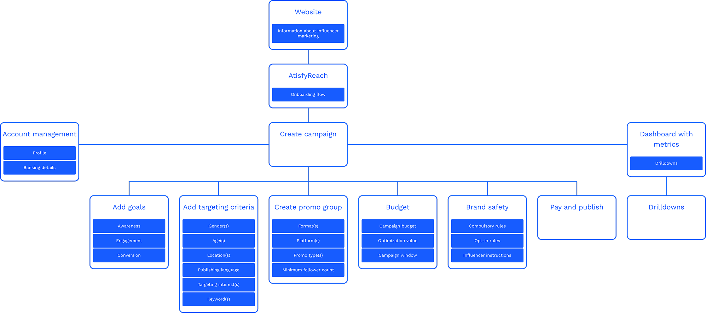
Design
Designing for Adoption
Instead of starting with features, I defined the behavioural conditions users needed to feel confident enough to adopt the platform.
The biggest barrier to adoption wasn't capability — it was overwhelm. To counter this, we collapsed complex influencer evaluation into a guided campaign flow.
Campaigns aren't built in one sitting, and enterprise teams don't work sequentially. I structured the platform as independent but connected modules:
Every interaction was designed to teach. Selecting creators updated projected engagement, adjusting a budget recalculated estimated reach, and filtering audiences refined performance expectations in real time.
Low-Fi Prototype
Visualizing a User-Centric Experience
Through rapid sketching, I explored common design patterns across competing platforms to identify familiar interactions for AtisfyReach. This helped uncover key interface elements and flexible screen structures that could support multiple tasks.
Leveraging these insights allowed the design to reduce the learning curve, streamline interactions, and create a more intuitive user experience.
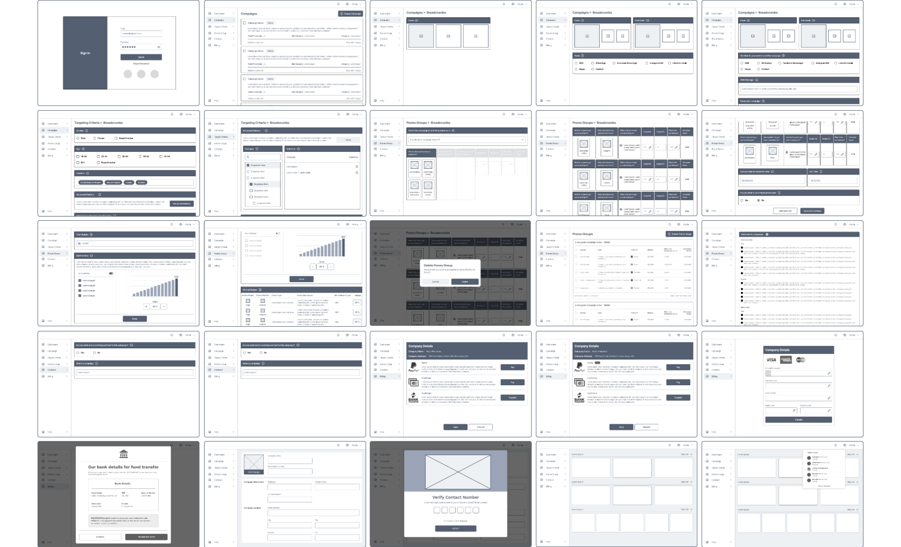
Understanding What Users Find Intuitive
Low- and mid-fidelity prototype testing helped uncover how users expected to complete tasks within the app. By observing interactions and gathering feedback, I identified key adjustments needed to strengthen the foundation for the high-fidelity prototype.
Small but important improvements - such as using clear, actionable iconography and maintaining consistent navigation pathways - emerged as critical elements in shaping the evolving design system.
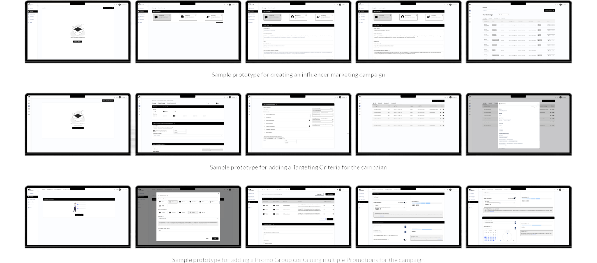
Testing & Iterations
Surfacing New Issues & Refining for Maximum Impact
The prototype provided a near-real experience, revealing insights beyond the initial usability goals. While users successfully completed onboarding, testing surfaced deeper concerns around influencer rejections and campaign uncertainty.
Further discussions revealed an overlooked need - the ability to clearly understand each influencer's potential value and impact on brand outcomes. This insight highlighted opportunities to improve transparency, build trust, and support better decision-making within the platform.
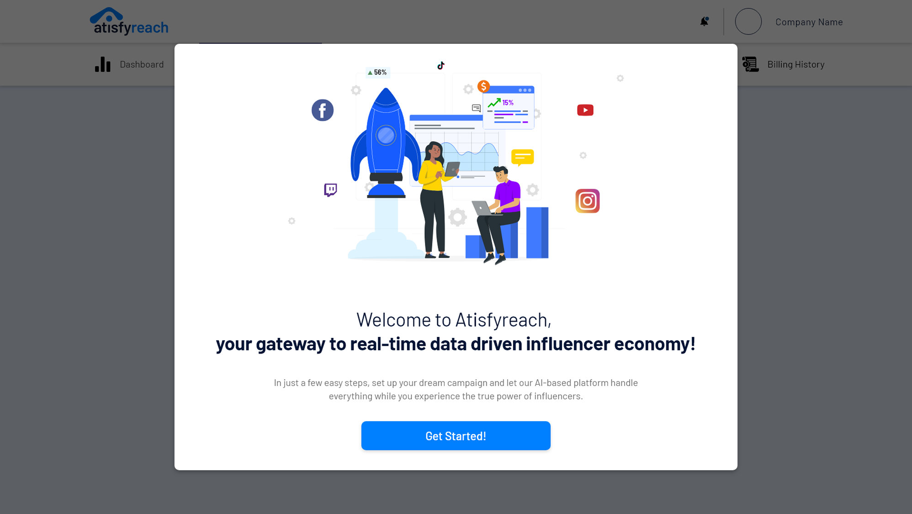
Design System
A Sneak Peak into the Design System


Results
Successful launch of AtisfyReach
Our launch saw strong adoption that continued to accelerate as the platform matured. Early feedback emphasized the intuitive onboarding experience, allowing brands to quickly set up and run influencer campaigns with minimal support.
Final Thoughts & The future
Opportunities for Product Growth
- Campaign Templates - Introduce reusable templates to reduce setup time and enable faster campaign launches.
- Campaign Scheduling - Allow brands to schedule campaigns in advance for better planning and execution.
- Advanced Analytics - Provide deeper insights through visualizations and detailed metric breakdowns.
- Improved Data Exploration - Enable filtering, sorting, and deeper analysis to support more informed decision-making.
Key Learnings from the Design Process
- Complexity Behind Simplicity - Designing a simple campaign workflow revealed the intricate dependencies behind influencer marketing systems.
- Trust as a Foundation - Both brands and influencers require transparency and reliability for successful collaborations.
- Designing for System Harmony - Even simple features require thoughtful integration to maintain stability across the platform.
- Depth Over Brevity - Users valued deeper, actionable insights over high-level metrics.
Thank you
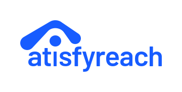
The diagrams/screens/typography may not reflect the latest version of AtisfyReach due to ongoing development.
All rights reserved by Atisfy Pte. Ltd.